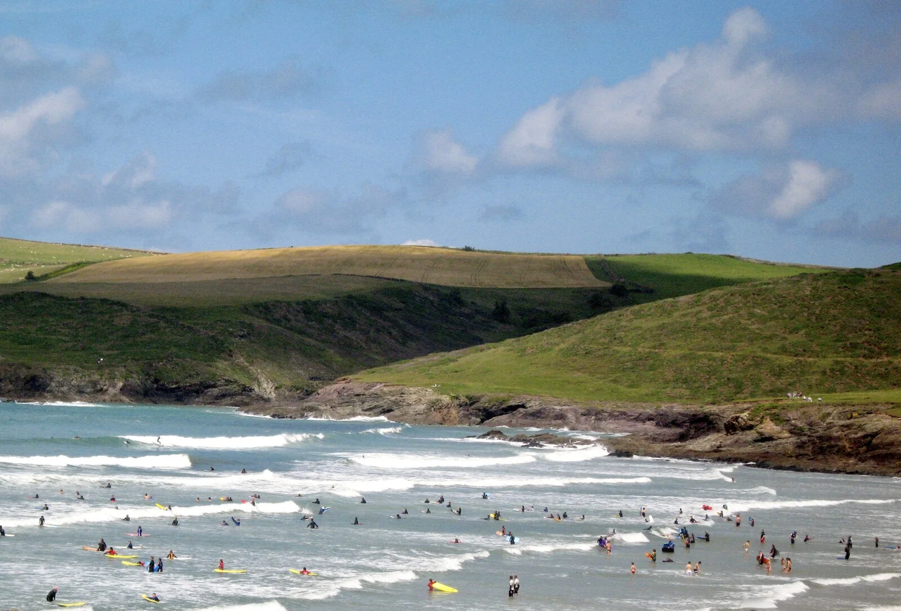

Polzeath
Cornouailles, Royaume-Uni · surf

Une baie des Cornouailles fréquentée par les surfeurs. Le village se rassemble au bord de la plage.
- Lieu
- Cornouailles, Royaume-Uni
- Niveau
- Variable selon les conditions
- Activités
- surf
- Type d'eau
- Mer / océan
- Coordonnées
- 50.58, -4.92 (position approximative du secteur)
Ouvrir dans Ocean Buddy Télécharger sur l'App Store
Source : Visit Cornwall.